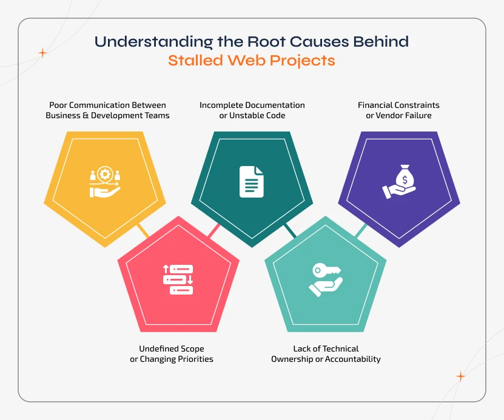
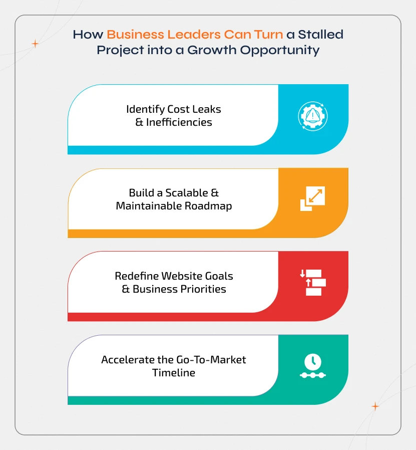
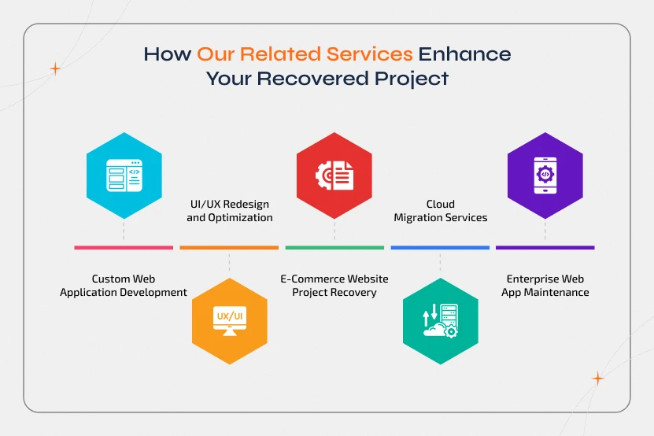

Whenever a web project gets stuck or stops in-between the development process, it is not just a temporary delay, it's a disruption that affects business goals, budget, and timelines. A lot of companies come across this situation after working with the wrong agency, losing an in-house expert, or while encountering unexpected technical challenges. If you are a business owner dealing with this situation, then this blog is your one-stop destination that explains why it is vital to hire web developers for a long-term project.
When you hire developers for a stalled web project, you are actually making specialists who can step in, assess the current situation, and recover your project from your existing work. These experts often conduct a detailed code audit, resolve performance and compatibility issues, and rebuild unfinished modules to align with your original scope.
By taking this recovery-focused approach, you can make the half-built website that causes app development delays into a high-performing digital platform. This way, businesses can restore the momentum, minimize the rework, and close the gap between their business goals and digital delivery.
Understanding the Root Causes Behind Stalled Web Projects
Before restarting the development, it is vital for any business to identify why its website or web app is on hold. Many times, projects stall not just because of the technical issues, rather, due to misalignment between the business goals, processes, and execution.

The most common causes include:
1. Poor Communication Between Business & Development Teams
Any project loses its direction whenever the goals, priorities,
and deliverables are not clearly stated. Misunderstanding between the stakeholders
and developers often leads to delays, rework, and incomplete results.
2. Undefined Scope or Changing Priorities
Whenever a
project has no clear or consistent scope, it requires constant adjustments. Frequent
changes in features or requirements lead to confusion, extended timelines, and make
it hard to maintain code stability.
3. Incomplete Documentation or Unstable Code
New teams will
find it hard to continue working when the documentation is missing or the codebase
is unstructured. This results in technical issues, integration failures, and
inconsistencies across the systems.
4. Lack of Technical Ownership or Accountability
Without a
dedicated technical lead or clear project ownership, decision-making slows down. As
a result, critical tasks get delayed and quality assurance diminishes.
5. Financial Constraints or Vendor Failure
Many of the
projects go on hold due to insufficient budget planning or an underperforming
development partner. All these issues become the reason for the project to stall and
be built with no continuity plan.
To better handle all these causes, business owners can find web developers for paused projects. They will assess the project's current stage, audit the code, and provide a practical recovery roadmap. Similarly, when you hire developers for stalled web projects, they make sure every technical gap and business dependency is taken into consideration. They help you efficiently restart the project while minimising waste of time and achieving faster delivery.
Why Web Projects Get Stuck Midway — and How to Fix Them
Despite making a better plan and promising start, many web projects come across unexpected challenges that will halt the progress. A lot of factors can be the cause for a project to lose momentum, and the most frequent ones encountered by businesses are as follows:
1. Unclear Requirement & Poor Backlog Management
When the
scope isn't properly defined or tracked, teams lose sight of priorities. This causes
misaligned deliverables, redundant work, and extended development cycles.
2. Missing Integrations & Security Gaps
Incomplete or
poorly implemented APIs, payment systems, and authentication layers may at times
become the cause, and that may stall deployment and compromise user trust.
3. Overreliance on Freelancers without Long-Term Commitment
While freelancers may offer quick fixes, they also lack the
accountability and continuity that are needed for project completion. This results
in fragmented development.
4. Incomplete Handover After Staff or Vendor Changes
A
project will frequently stall whenever the transitions are not managed properly.
Missing documentation and unclear ownership make it difficult for the new teams to
pick up where others left off.
5. Outdated Tech Stacks That Can't Scale
Using old,
outdated tech stacks and frameworks often limits the flexibility and makes
integration with modern systems difficult. This, in turn, forces teams to pause the
development for major rework.
To resolve these issues, choosing professional web developers for hold projects becomes essential. They will analyse the current architecture, resolve compatibility and performance issues to bring the project back in line with your business goals. Whenever you hire developers for a half-done website, you are not just finishing the build, but also upgrading it for long-term scalability, stability, and success.
Get Expert Help to Fix What's Holding Your Project Back
Bring your paused project back to life — faster, smoother, and ready to launch.
How to Prepare Your Stalled Web Projects for a Successful Restart
Before you bring in the new development team, it is vital to prepare well. The right plan helps avoid confusion, cut down the technical debt, and help your developers start productively.

Here is what we recommend for setting the foundation right:
1. Audit the Current Codebase & Dependencies
Assess the
quality, performance, and maintainability of your existing code. This helps find out
the weak spots and technical issues even before restarting the development process.
2. Document all Unfinished Features & Prioritize Based on Impact
It is better to outline which modules are incomplete for
clarity, and this business can know the important ones and work on delivering those
that have high priorities.
3. Secure all Access Credentials, APIs, & Cloud Accounts
Protecting and organizing the project assets is helpful to avoid
dependency issues or access delays when a new developer takes over.
4. Define the MVP Goal Before Adding New Features
Business
owners can focus on getting a functional, deployable version live before expanding.
This ensures faster turnaround and better quality control.
5. Set Clear Success Metrics & Milestones
By defining
measurable goals like performance benchmarks or launch timelines, you can
effortlessly track progress and accountability.
When you hire web developers for a paused project, their guidance will help you through each step of this preparation phase. This way, you can rebuild or resume old website project while ensuring the existing work is utilized effectively, minimizing rework, and accelerating time-to-launch.
How to Find Developers Who Can Take Over Your Ongoing Project & Deliver Fast
Whenever your web project is on hold, every day of delay loses progress and potential business benefits. This even makes it harder to recover your original progress. Thus, you need to look for professionals who can step in to act fast in understanding the existing framework and start delivering progress without affecting what's already built. For this reason, businesses choose to hire web developers for ongoing projects on hold who can revive stalled work and move it forward efficiently.
In any trusted web development company like Sparkout, web developers for ongoing projects on hold are trained in such a way that they can work in complex environments and take full ownership from the beginning. With expertise, they analyse your current codebase, technical gaps, and bring your project back on track. For this, they choose agile collaboration and transparent reporting options.
At Sparkout, developers excel in:
- Taking over your ongoing or partially completed web projects.
- Perform rapid onboarding through detailed code and system audits.
- Provide clear sprint planning with agile progress tracking.
- Offers seamless coordination with internal or remote teams.
Want experts who can take over without slowing your down?
Our team is ready to rescue your ongoing project and deliver measurable results faster.
How do Developers Turn Unfinished Projects into Fully Functional Websites
Turning a half-done website into a fully working product requires not requires time, but also involves knowing exactly what to fix and how to move forward. It requires precision, technical depth, and a clear recovery strategy and not trial & error. At Sparkout , we follow a structured process to rebuild and relaunch your project successfully.
- Stabilizing the existing codebase will help remove bugs while improving performance and smoothing the functionality.
- The right development experts will complete the unfinished features and integration to ensure your platform remains fully operational and business-ready.
- The developers make sure to keep the users engaged by enhancing the UX/UI design for a polished and modern look.
- By implementing analytics, SEO, and security measures, developers ensure better visibility and long-term protection.
- Developers will deploy and maintain the website to guarantee stability, scalability, and continuous improvement.
Thus, the developers work beyond patching code with the goal to redevelop and recover your website into a high-performing digital asset that drives measurable business outcomes.
How to Accelerate Project Completion using Modern Tools
Using the right tools is all that is essential to get your stalled project back on track quickly. By using the latest web development frameworks and platforms, you can easily speed up delivery without sacrificing quality or security.
Most often, the web developers work with:
- GitHub & Bitbucket for clean version control and team collaboration
- Jira & Asana to give you full visibility into progress and priorities
- Docker, AWS, and CI/CD pipelines for automated, faster deployments
- Figma & Zeplin to bridge the gap between design and development
By combining these tools with our expertise, our web application recovery services help you resume your project efficiently. No matter if you are looking to hire a website development company for a rescue project or need experts to complete your app, Sparkout makes the transition smooth and future-ready.
How Business Leaders Can Turn a Stalled Project into a Growth Opportunity
If your web project is on hold currently, then it doesn't mean the entire project is a failure. Rather, you can take this as an opportunity to reassess, optimize, and relaunch stronger. With the right development experts, businesses can transform the downtime into a strategic relaunch opportunity.

The key steps include:
1. Identify Cost Leaks & Inefficiencies
This involves
reviewing past development efforts to uncover redundant spending, unclear scopes, or
mismanaged vendor work. It helps redirect the budget towards high-impact areas.
2. Build a Scalable & Maintainable Roadmap
By replanning
the project architecture and timeline, it is possible to ensure every module
supports future scalability and performance goals. This, in turn, helps avoid
technical debt down the road.
3. Redefine Website Goals & Business Priorities
It is
better to clarify what success looks like. Whether it is lead generation, user
engagement, or eCommerce conversion, defining the new goals ensures that the
development aligns with measurable outcomes.
4. Accelerate the Go-To-Market Timeline
With an optimized
roadmap and clean code foundation, the project can move faster through development,
testing, and launch. This, in turn, cut down the delays and improved the ROI.
You can choose to hire web developers for a paused project, businesses can recover faster, reduce losses, and turn an unfinished idea into a growth-ready digital asset.
Turn Your Stalled Project into a Growth Story
Rebuild your digital platform, restore momentum, and unlock new growth opportunities.
How CTOs & Decision-Makers Can Regain Technical Decision-Makers' Integrity in Stalled Projects
For CTOs or IT leaders, recovering a stalled project involves far beyond completing the unfinished code. i.e., it's about restoring technical consistency, visibility, and long-term maintainability. A well-managed recovery ensures the system is stable, scalable, and easy to extend.

Key areas to focus on include:
1. Conducting In-Depth Code & Architecture Audits
This is
all about finding the performance bottlenecks, code inconsistencies, and structural
flaws that will cause earlier delays.
2. Cleaning Up Version Control for Clear Handovers
To
establish transparency and ensure smoother collaboration between old and new teams,
it is vital to streamline the repositories and branches.
3. Implementing CI/CD for Seamless Deployment
With
automated testing and deployment pipelines, it is possible to reduce manual effort,
improve quality assurance and speed up releases.
4. Adopting Agile Governance Models
It is possible to
refine development processes with sprint-based planning, clear ownership, and
consistent reporting. This, in turn, ensures accountability at every stage.
By choosing to hire web developers for ongoing or hold projects, technical leaders can regain control, rebuild the project with confidence, and establish a stronger foundation for future growth.
How to Prevent Future Setbacks with Smart Post-Recovery Planning
Ensuring your project stays stable and future-ready is what truly defines success. A structured post-recovery plan helps maintain consistency, accountability, and performance after relaunch.
The major post-recovery actions include:
Setting Sprint-Based Milestone with Progress Tracking
By
defining short, achievable deployment cycles, you can effortlessly monitor the
ongoing progress and identify the risks early.
Establishing Performance Monitoring Tools
With the help of
analytics and monitoring dashboards, you can keep an eye on uptime, loading speed,
and user behaviour in real-time.
Defining Ownership & Accountability Roles
To avoid any
further handover confusion, it is good to assign clear responsibilities across
development, QA, and DevOps teams.
Scheduling Regular Maintenance & Optimization Checks
It
involves planning consistent updates for security patches, version upgrades, and
feature refinements to ensure the systems evolve smoothly.
For long-term stability, businesses can combine website development and project recovery with structured post-launch support. This eventually prevents any further delays and project pauses.
How to Replace Your Current Development Company Without Any Risk
When your web project has stalled due to an unresponsive or unreliable development partner, you aren't alone. There are many businesses that face similar challenges whenever a vendor doesn't respond, deliver poor-quality work, or miss any key deadlines. Hence, transition becomes a turning point and saves your project when done carefully.
At Sparkout, we take up smooth transition process that includes:
- Seamless handover with complete access to code, assets, and documentation.
- Zero data loss guarantee that protects your intellectual property.
- Comes with dedicated onboarding specialists who can manage continuity and minimize downtime.
- Transparent reporting for full visibility on deliverables and progress.
By choosing to hire developers for hold projects or a website development company for rescue projects, your transition is structured, secured, and efficient. Thus, your project will get back on track without any disruption.
Frustrated with your current partner?
Let our team take over and get your project back on track.
How Our Related Services Enhance Your Recovered Project
After bringing stalled projects back to life comes the stage of scaling them for long-term growth and market advantage. A recovered website or application should evolve into a stronger, more competitive product, and that's where our complementary services come into play.

Our most popular services that will enhance your project recovery include:
1. Custom Web Application Development
We build custom,
high-performance solutions that align with your business goals.
2. UI/UX Redesign and Optimization
Our team of developers
improves user experience and visual appeal for higher engagement and conversion.
3. E-Commerce Website Project Recovery
We revive and
optimize online stores for seamless functionality and performance.
4. Cloud Migration Services
Our experts are capable of
moving your application to a secure, flexible cloud environment for better
performance.
5. Enterprise Web App Maintenance
With proactive monitoring
support, we ensure continuous stability, performance, and compliance.
These are the complementary services offered at Sparkout that extend beyond website redevelopment and project recovery. This helps businesses turn restored projects into lasting digital assets that drive growth.
Why Hire Web Developers for Hold Projects from Sparkout to Revive Your Website
When a web project stalls or stops in between, you need a recovery partner who understands your code and business outcomes. At Sparkout, we focus on helping companies revive, rebuild, and relaunch projects without starting from scratch.
Here is why businesses trust us to get their hold project back on track:
- We have proven expertise in website redevelopment and project recovery across different industries.
- Our dedicated web developers are capable of handling ongoing, stalled, and paused projects.
- We offer comprehensive support from initial audit to full-scale relaunch.
- Our teams offer transparent communication with agile milestones and real-time reporting.
- We offer flexible engagement models that are designed to fit every business's goals and timelines.
When you hire professional web developers for hold project from Sparkout, you will get a team committed to restoring the project and delivering measurable results.
Are you ready to revive your website?
Let our experts rebuild what’s left and complete your project.
Conclusion
Thus, a hold project is not a failure. Rather, it is an opportunity to rebuild smarter and relaunch stronger. With the right development team, what once felt like a setback will become a turning point. Whether you are a startup founder looking to regain momentum or an enterprise leader seeking stability, or a CTO focused on restoring technical integrity, with the right expertise, you can recover your project, its investment, and bring your original vision to life better than before.